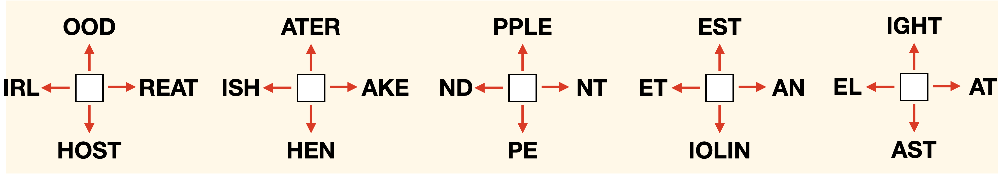

Gifu, Kamioka — deep inside the mountain, a long underground tunnel stretched quietly into the darkness.
There, mirrors and laser instruments stood in perfect alignment, glowing faintly in the dark.
🎩 The Kindest Sound in the Universe — Episode 2: The Secret of the Sound

Agasa
So this is the place Kid mentioned...

A device that “listens to the sound of the universe”? What could that mean?

Conan
We’ll know soon enough—once we solve this puzzle.
Conan pulled out an envelope. On its back were three strange diagrams printed in red and blue.
💌 Challenge from Kaito Kid
“Decode the three sacred marks hidden within the Temple of Cosmic Secrets.
Find the missing letters for each square.
Combine them according to the arrows—
and one word shall appear.”
“When all three unite, the ‘Sound of the Universe’ will be revealed.”
— From the Magician under the Moon 🌙
Conan placed the three diagrams on the desk and began to study them carefully.

Each square holds a missing letter.
Follow the direction of the arrows to complete meaningful English words.
When you find all five letters, combine them to reveal the hidden message.
Conan
The five letters... What could they form?